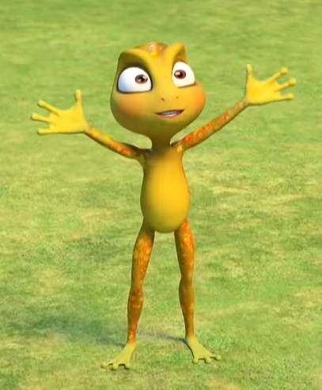

Общее описание
 Кроме Варвары и Василисы больше никто не носит традиционный русский костюм. У Вари есть пять старших братьев, вместе с которыми она всё детство пролазила по деревьям. Не любит извиняться и убираться в общей комнате. В серии «Заклятие невидимости» невидимо напроказничала в столовой у Совы, в комнате у Кота-Баюна и пыталась пробраться в кабинет Кощея но сработала сигнализация и Варе так и не удалось напроказничать у него в кабинете. Умеет делать свои копии с помощью волшебного гребешка. В серии «Чудодейственные травы» Варе удалось найти волшебное растение обережку, тем самым доказав, что такое растение действительно существует.